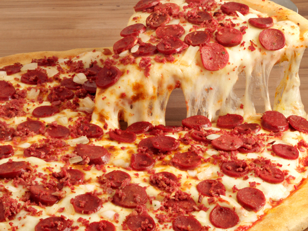

Pizza de calabresa

Pizza de calabresa
Receita para fazer a massa e assar uma delicosa pizza de calabresa
Ingredientes
Massa
- 500g de farinha de trigo.
- 25 g de fermento de pão.
- 200ml copo de água.
- 1 ovo.
- 50 g de azeite.
- 1 colher (sopa) de fermento em pó.
- 1 colher (café) de sal.
Molho
- 300g de tomate maduro.
- 50g de queijo parmesão ralado.
- Sal
- Orégano.
- 1 colher (sopa) de azeite.
Recheio
- 300 g de calabresa.
- 2 cebolas cortadas em rodelas finas.
- 1/2 de azeitona sem caroço.
- 1 colher (sopa) de azeite.
- 1 colher (café) de orégano.
Instruções
Massa:
- Misturar 50g de farinha, fermento e um pouco de água.
- Deixar descansar por 20 minutos e adicione os demais ingredientes até obter uma massa macia
- Cortar em 3 partes iguais, formando bolas e cobrir com um pano.
- Deixar descansar por 1 hora.
- Abrir a massa com rolo no tamanho desejado
- Passar molho de tomate e assar em forno pré aquecido, a 180ºC por 15 minutos
- Retirar e deixar esfriar.
Cobertura:
- Espalhar a calabresa sobre o molho de tomate e cobrir com cebola.
- Espalhar azeitonas e regar com azeite e orégano.
- Assar por 10 minutos.